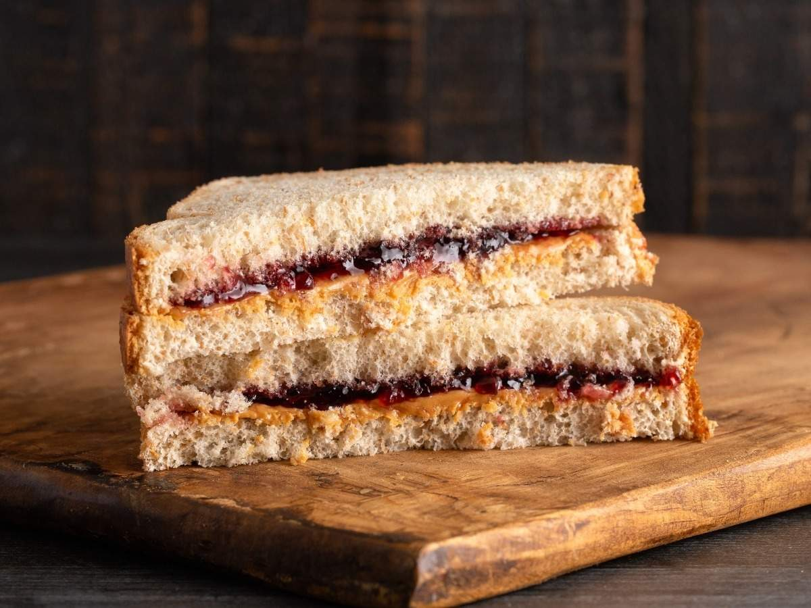

Peanut Butter and Jelly Sandwich

Description
Simple sandwich with peanut butter and strawberry jelly
Ingredients
- Two pieces of white bread
- Jar of Strawberry Jam
- Jar of Skippy's Peanut Butter
Instructions
- Get two slices of white bread
- Slather one slice with peanut butter
- Slather the other slice with jam
- Stack the two breads with the slathered sides facing themselves
- Enjoy!